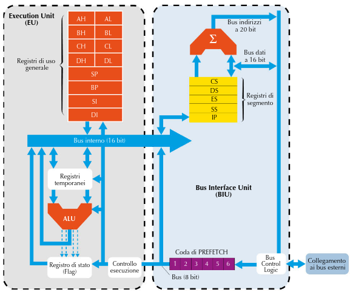

Architettura dell’8086
La CPU 8086 è dotata di un bus dati a 16 bit e di un bus indirizzi a 20 bit, in grado di indirizzare 1 Mbyte di memoria, cioè 2 locazioni. La CPU è divisa in due parti: la EU (Execution Unit) preposta all’esecuzione delle istruzioni e la BIU (Bus Interface Unit), responsabile della comunicazione con il bus. La caratteristica più rilevante del sistema è che queste due parti possono lavorare autonomamente l’una rispetto all’altra, e quindi possono fare contemporaneamente due cose diverse, in modo indipendente. Mentre la EU esegue un’istruzione (fase di execute), la BIU può cominciare a prelevare dalla memoria l’istruzione successiva. In questo modo è possibile rendere parallele (contemporanee) le operazioni di accesso al bus esterno (fetch) e le operazioni di elaborazione. Le due parti comunicano tramite una coda di prefetch (una coda di registri gestita con politica FIFO, First In First Out): mentre la BIU pone nella coda le istruzioni da eseguire, la EU le “preleva” dalla coda e le esegue. È questo un primo esempio di realizzazione della tecnica del pipeline. La coda di prefetch ha una dimensione di 6 byte, che è la dimensione massima di una istruzione assembly 8086.
La BIU effettua una lettura anticipata (pre-fetch) delle istruzioni dalla memoria in modo sequenziale e le pone nella coda. Poiché questa è gestita con politica FIFO, la prima istruzione che è entrata nella coda sarà la prima a essere prelevata dalla EU per essere eseguita. In questo modo le istruzioni sono anticipatamente caricate ed eseguite nell’ordine corretto. Questo meccanismo ha uno svantaggio: la lettura delle istruzioni è strettamente sequenziale, per cui in caso di salto (o interruzione) la coda predisposta è inutile e va ricostruita.
Registri di uso generale (general purpose registers)
La CPU 8086 è dotata dei seguenti registri, tutti a 16 bit
AX - Registro accumulatore. Può essere utilizzato come due registri di 8 bit: AH(parte alta) e AL (parte bassa).
BX - Registro base (utilizzato per contenere la base di un indirizzo relativo). Può essere usato come due registri di 8 bit: BH (parte alta) e BL (parte bassa).
CX - Registro contatore (utilizzato per esempio nell’istruzione LOOP).Può essere usato come due registri di 8 bit: CH (parte alta) e CL (parte bassa).
DX - Data Register (utilizzato in istruzioni aritmetiche e di I/O).Può essere usato come due registri di 8 bit: DH (parte alta) e DL ( parte bassa).